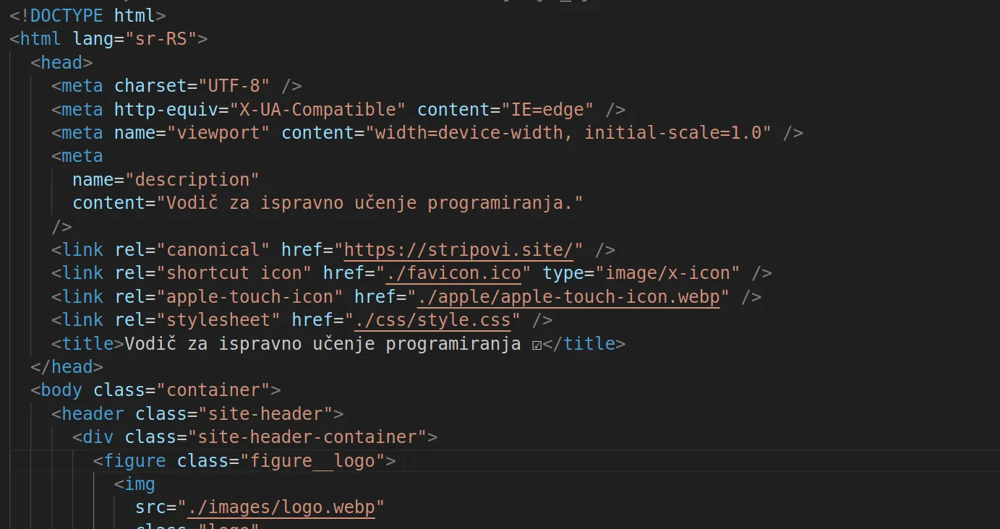

Vodič za učenje HTML 5 markup jezika
Šta je HTML 5
Kao što je već na glavnoj stranici pomenuto HTML5 je markup jezik koji služi da napravimo takozvani kostur naših web stranica.
HTML radi na bazi tagova koji označuju koju ulogu će imati koji deo na našoj web stranici i tako pravi neku vrstu skeletona naše stranice na kojem dalje radimo dizajn i ostalu programasku logiku ako je potrebna(ako stranica nije statična).
Dakle.kada smo već pomenuli statičku HTML5 stranicu onda je red i da objasnimo sta su statičke a šta dinamičke web stranice.
Statičke web stranice su obično stranice koje se sastoje od nekog sadržaja(čitaj teksta,slika,video-a itd) ali se na tim stranicama samo prikazuje sadržaj koroz HTML i CSS.
Stranice takodje mogu biti i dinamičke,dinamičke stranice omogućuju korisniku da odradi neku radnju na njima,na primer da popuni login formu i pošalje tražene podatke serveru na obradu.
Ta login forma je samo jedan od primera tzv dinamičke HTML stranice a primera ima mnogo pa da skratimo,dakle dinamička stranica je ona stranica gde se na osnovu korisničke interakcije sa istom u pozadini poziva server da odradi neku programsku logiku koju je korisnik ili mi kao programeri zadao na toj stranici.
U sledećoj sekciji ove stranice ćemo više govoriti o HTML5 učenju i referencama,gde da pronadjete kvalitetne reference za učenje.
Gde i kako učiti HTML5?
Dakle kao što podnaslov govori ovde ćemo potanko o referencama za ucenje HTML-a,gde i kako da ga učite.
Dakle,osnovni resurs za učenje vam hipotetički može biti W3School dokumentacija ili pak MDN dokumentacija mada je MDN za nešto naprednije korisnike generalno što se programiranja tiče.
Dakle spisak svih HTML tagova i šta koji od njih predstavlja na HTML 5 web stranici možete pronaći na W3 HTML tagovi.
Kao što pomenuh tu imate čitav spisak svega vezanog za HTML ,doduše na engleskom jeziku,no ako pak stremite ka tome da postanete web developer usput uz učenje morate stalno jačati i tehnički engleski jezik.
Takodje vam preporučujem da pogledate na youtube-u playlistu o osnovama HTML-a,plejlista nije preglomazna i ne pokušava praviti HTML5 nečim težim nego što jeste.
Dakle na HTML 5 plejlisti za učenje imate 9 video-a koji u sebi sadrže reference za učenje i objasnjavaju osnovne stvari što se HTML-a tiče
U tim video-ima imate i uputstva kako da napravite vaše lokalno okruženje za učenje i vežbanje HTML5,CSS3 i JavaScript-a na vašem računaru,a uputsva imate i za windows operativni sistem kao i za linux.
Takodje imate i reference za čitanje pdf knjiga najboljih svetskih autora na gorenavedenoj plejlisti a i video o izboru opeativnog sistema za programiranje jako lepo obradjeno.
Dakle učite sa youtube-a,w3schools,dobrih preporučenih pdf knjiga i uspeh neće izostati,samo pratite preporuke sa gorenavedene HTML plejliste.
Hvala na poseti i želim vam srećno učenje.